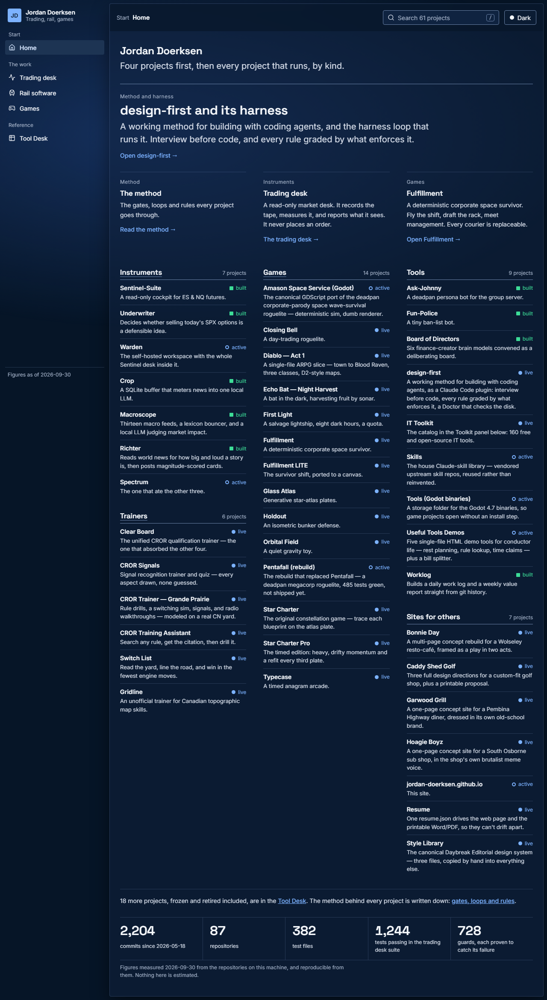
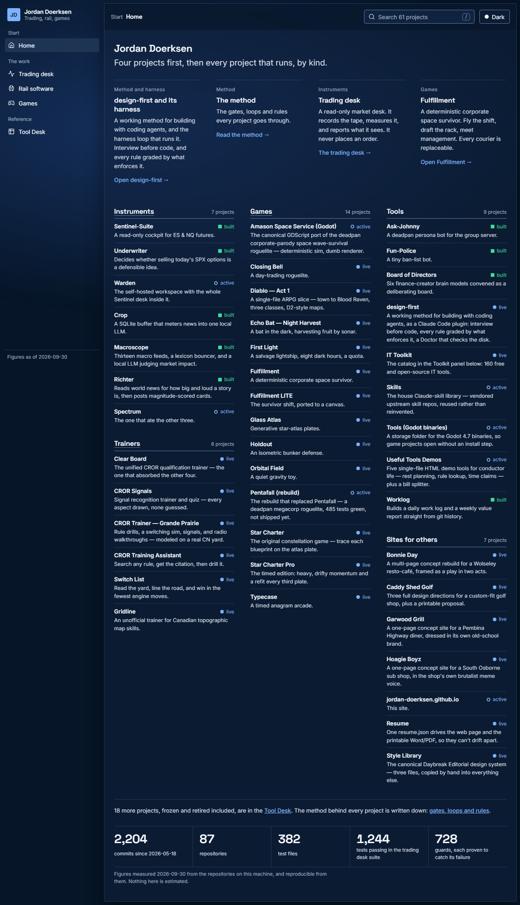
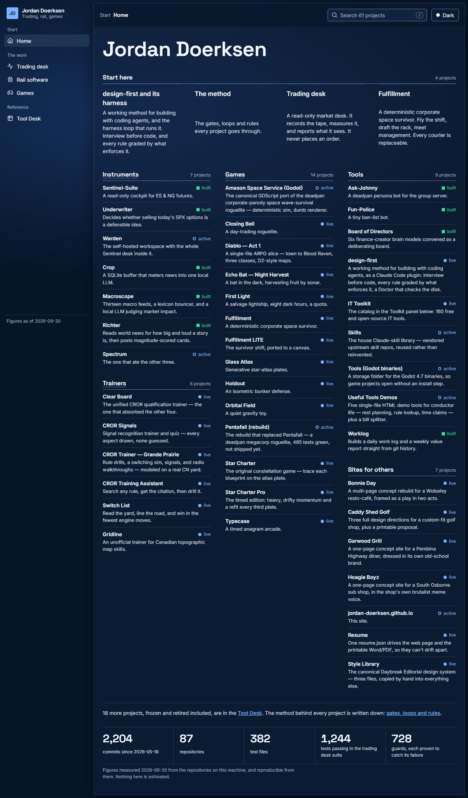

The same Home, composed three ways from the site's own generator. Each picture shows the top of the 1280px page, dark theme. Each link opens the full page. Nothing here is promoted to the live root.
Zones: hero field, viewport stage (one lead, three peers), content band (index), footer resolution. Patterns: editorial rhythm, anti-card composition.

Zones: hero field, viewport stage (four equal panels), content band (index), footer resolution. Pattern: anti-card composition.

Zones: hero field (the name only), content band (index, the four picks first), footer resolution. Patterns: anti-card composition, typographic monument.

Each full page keeps the site's navigation, so the four other screens open from it.